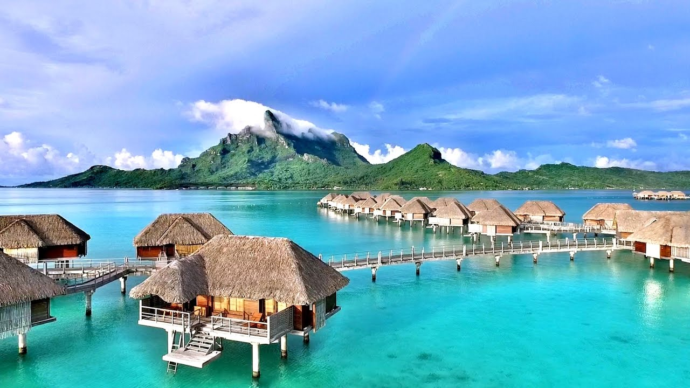
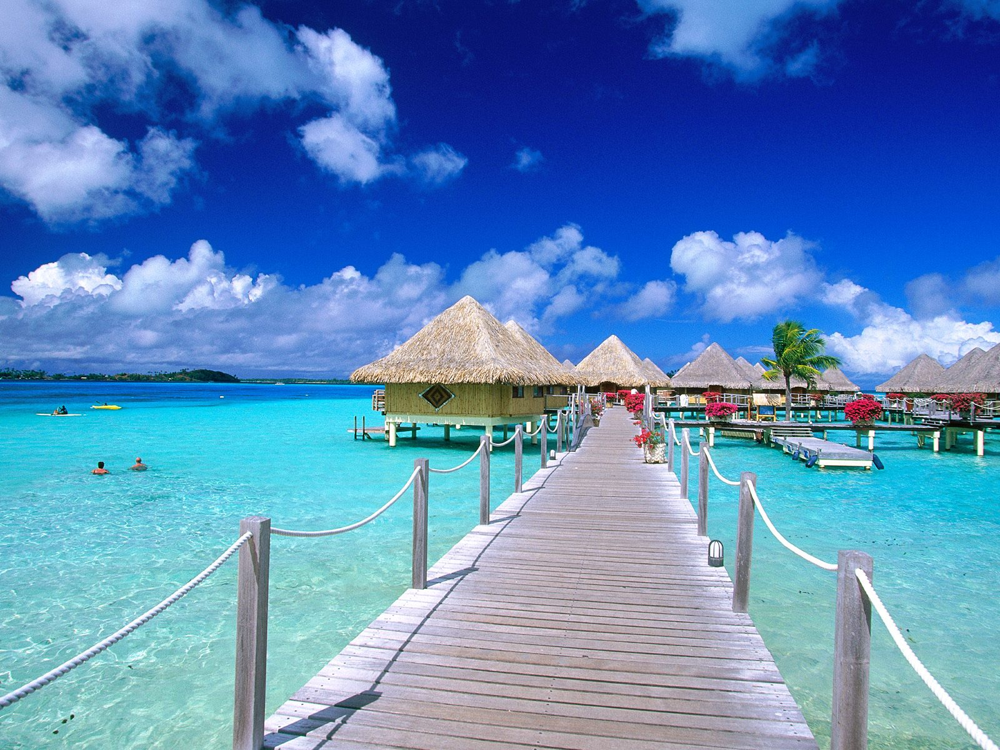

DREAM CITIES
Accueil
Acceuil
Bolivie
Bora-Bora
Chilie
Dubai
vietnam
Taj Mahal
Saint-Louis
Bora Bora
Présentation de Bora Bora
Bora Bora, anciennement appelle « Vavau », est le haut fleuron touristique de la Polynésie Française,
dans le Pacifique Sud, à quelques kilomètres de la Tahiti. Bora bora, c’est cette île volcanique, vieille
d’il y a des dizaines de millions d’années, qui est aujourd’hui entourée d’un magnifique et vaste
lagon, d’un paysage d’eau turquoise, de forêts vert émeraude et d’hôtels somptueux

